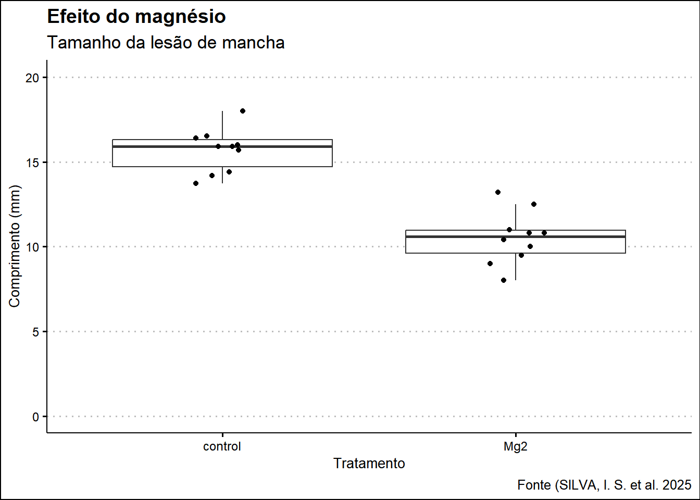
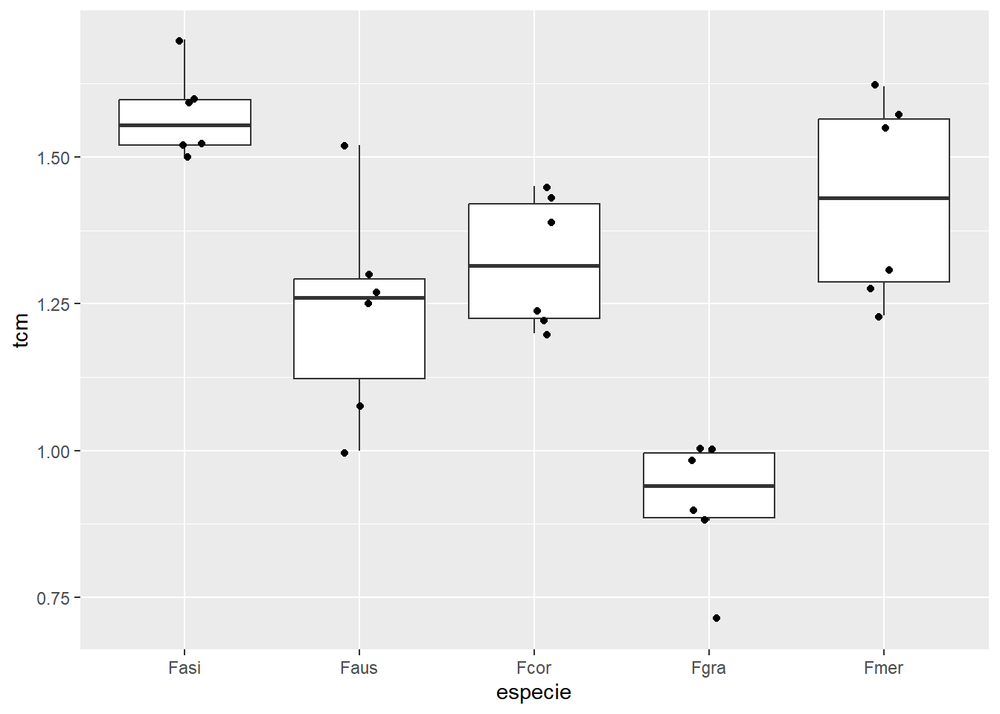
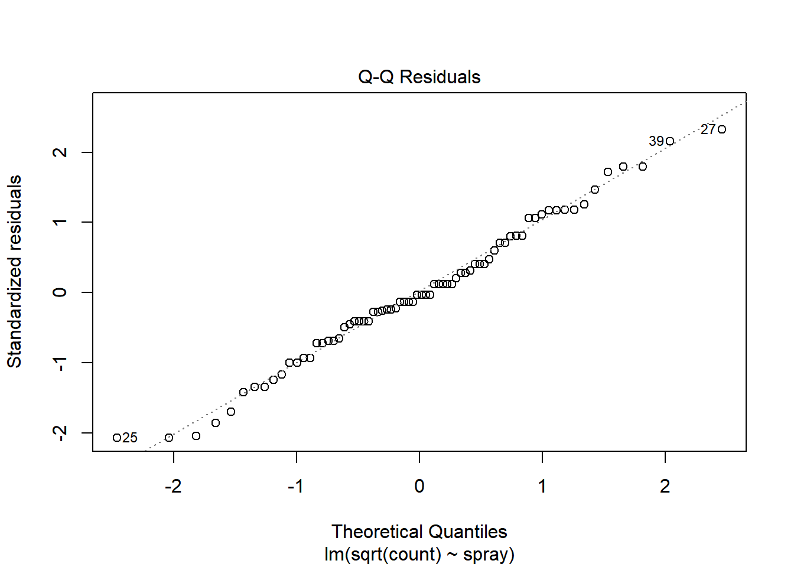

[1] 2Fip_caderno
This is a Quarto website.
To learn more about Quarto websites visit https://quarto.org/docs/websites.
“Este é o caderno de aulas práticas da disciplina FIP-606 – Análise e Visualização de Dados em Fitopatologia. Ele serve como material de consulta futura, com códigos para análises estatísticas, além de disponibilizar publicamente as atividades executadas em sala de aula.”
üìò Aula 1 ‚Äî Importa√ß√£o, Manipula√ß√£o e Visualiza√ß√£o de Dados no R
Vamos importar um conjunto de dados que está disponível no R.
Neste trecho, está sendo utilizado o dataset Orange, que já vem embutido no R. Ele contém medidas de crescimento (circunferência) de laranjeiras ao longo do tempo. A variável dados armazena esse conjunto para uso posterior.
Tree age circumference
1 1 118 30
2 1 484 58
3 1 664 87
4 1 1004 115
5 1 1231 120
6 1 1372 142
7 1 1582 145
8 2 118 33
9 2 484 69
10 2 664 111
11 2 1004 156
12 2 1231 172
13 2 1372 203
14 2 1582 203
15 3 118 30
16 3 484 51
17 3 664 75
18 3 1004 108
19 3 1231 115
20 3 1372 139
21 3 1582 140
22 4 118 32
23 4 484 62
24 4 664 112
25 4 1004 167
26 4 1231 179
27 4 1372 209
28 4 1582 214
29 5 118 30
30 5 484 49
31 5 664 81
32 5 1004 125
33 5 1231 142
34 5 1372 174
35 5 1582 177Transformações de dados
Aqui é feita a extração da variável circumference, e são aplicadas transformações matemáticas comuns em análise de dados:
exp(circ)calcula o valor exponencial da circunferência;log(circ2)retorna o logaritmo dos valores transformados.
Essas transformações são úteis para explorar a distribuição dos dados ou atender premissas de normalidade e homogeneidade de variância em análises estatísticas.
[1] 1.068647e+13 1.545539e+25 6.076030e+37 8.787502e+49 1.304181e+52
[6] 4.675375e+61 9.390741e+62 2.146436e+14 9.253782e+29 1.609487e+48
[11] 5.622626e+67 4.996327e+74 1.451376e+88 1.451376e+88 1.068647e+13
[16] 1.409349e+22 3.733242e+32 8.013164e+46 8.787502e+49 2.327732e+60
[21] 6.327432e+60 7.896296e+13 8.438357e+26 4.375039e+48 3.366499e+72
[26] 5.479138e+77 5.855267e+90 8.689987e+92 1.068647e+13 1.907347e+21
[31] 1.506097e+35 1.935576e+54 4.675375e+61 3.691814e+75 7.415207e+76Adição de uma variavel nova nos dados originais:
Neste bloco, é criada e adicionada ao dataframe original a nova variável logcirc, que representa o logaritmo da circunferência. Isso facilita análises futuras, como modelos lineares, que podem se beneficiar de variáveis transformadas.
Tree age circumference
1 1 118 30
2 1 484 58
3 1 664 87
4 1 1004 115
5 1 1231 120
6 1 1372 142
7 1 1582 145
8 2 118 33
9 2 484 69
10 2 664 111
11 2 1004 156
12 2 1231 172
13 2 1372 203
14 2 1582 203
15 3 118 30
16 3 484 51
17 3 664 75
18 3 1004 108
19 3 1231 115
20 3 1372 139
21 3 1582 140
22 4 118 32
23 4 484 62
24 4 664 112
25 4 1004 167
26 4 1231 179
27 4 1372 209
28 4 1582 214
29 5 118 30
30 5 484 49
31 5 664 81
32 5 1004 125
33 5 1231 142
34 5 1372 174
35 5 1582 177 Tree age circumference logcirc
1 1 118 30 3.401197
2 1 484 58 4.060443
3 1 664 87 4.465908
4 1 1004 115 4.744932
5 1 1231 120 4.787492
6 1 1372 142 4.955827
7 1 1582 145 4.976734
8 2 118 33 3.496508
9 2 484 69 4.234107
10 2 664 111 4.709530
11 2 1004 156 5.049856
12 2 1231 172 5.147494
13 2 1372 203 5.313206
14 2 1582 203 5.313206
15 3 118 30 3.401197
16 3 484 51 3.931826
17 3 664 75 4.317488
18 3 1004 108 4.682131
19 3 1231 115 4.744932
20 3 1372 139 4.934474
21 3 1582 140 4.941642
22 4 118 32 3.465736
23 4 484 62 4.127134
24 4 664 112 4.718499
25 4 1004 167 5.117994
26 4 1231 179 5.187386
27 4 1372 209 5.342334
28 4 1582 214 5.365976
29 5 118 30 3.401197
30 5 484 49 3.891820
31 5 664 81 4.394449
32 5 1004 125 4.828314
33 5 1231 142 4.955827
34 5 1372 174 5.159055
35 5 1582 177 5.176150Desagregar um conjunto de dados em variaveis independentes:
Com attach(), as variáveis do dataframe dados passam a estar disponíveis diretamente no ambiente do R, sem a necessidade de usar $.
[1] 30 58 87 115 120 142 145 33 69 111 156 172 203 203 30 51 75 108 115
[20] 139 140 32 62 112 167 179 209 214 30 49 81 125 142 174 177Instalação e uso de pacotes; cálculo de AUDPC
Aqui são carregados os pacotes agricolae (para análises agrícolas) e tidyverse (conjunto de pacotes para ciência de dados). Em seguida, são definidos vetores com dias e severidade da doença. A função audpc() calcula a Área Abaixo da Curva de Progresso da Doença (AUDPC), uma métrica para quantificar a progressão temporal de doenças em plantas.
Acessando dados do pacote agricolae
Este bloco carrega e inspeciona o dataset corn, também do pacote agricolae. A função str() é usada para visualizar a estrutura do conjunto de dados, incluindo tipos de variáveis e primeiras observações — etapa essencial na exploração inicial dos dados.
Code
[1] 40 80 90evaluation
1015 method observation rx
1 1 83 11.0
2 1 91 23.0
3 1 94 28.5
4 1 89 17.0
5 1 89 17.0
6 1 96 31.5
7 1 91 23.0
8 1 92 26.0
9 1 90 19.5
10 2 91 23.0
11 2 90 19.5
12 2 81 6.5
13 2 83 11.0
14 2 84 13.5
15 2 83 11.0
16 2 88 15.0
17 2 91 23.0
18 2 89 17.0
19 2 84 13.5
20 3 101 34.0
21 3 100 33.0
22 3 91 23.0
23 3 93 27.0
24 3 96 31.5
25 3 95 30.0
26 3 94 28.5
27 4 78 2.0
28 4 82 9.0
29 4 81 6.5
30 4 77 1.0
31 4 79 3.0
32 4 81 6.5
33 4 80 4.0
34 4 81 6.5'data.frame': 34 obs. of 3 variables:
$ method : int 1 1 1 1 1 1 1 1 1 2 ...
$ observation: int 83 91 94 89 89 96 91 92 90 91 ...
$ rx : num 11 23 28.5 17 17 31.5 23 26 19.5 23 ...Criando gráficos simples com ggplot2
Um novo dataframe (data_curva) é criado para representar a evolução da severidade ao longo do tempo. Em seguida, é feito um gráfico combinando colunas (geom_col), linha (geom_line) e pontos (geom_point). Essa abordagem facilita a visualização de tendências e flutuações temporais de doenças.
Code
dates severity
1 7 0.1
2 14 5.0
3 21 10.0
4 28 35.0
5 35 50.0
6 42 60.0Code
# meu primeiro plot
data_curva |>
mutate(severity2 = c(1,10,35,58,70,82)) |>
ggplot(aes(dates,severity2))+
geom_col()+
geom_line(linewidth = 2,color="blue")+
geom_point(size = 5)+
theme_classic(base_size = 14)+
labs(x="Dia após o plantio",
y="severidade(%)")+
scale_y_continuous(limits = c(0,100),n.breaks = 10)+
scale_x_continuous(n.breaks = 8)
Personalizando cores do gráfico
Este gráfico repete a visualização anterior, mas com personalização de cores: barras pretas, linha roxa e pontos pretos. Isso demonstra como ggplot2 permite criar visualizações estilizadas para apresentação de resultados em artigos, relatórios e slides.
Code
data_curva |>
mutate(severity2 = c(1,10,35,58,70,82)) |>
ggplot(aes(dates, severity2)) +
geom_col(fill = "BLACK") + # Barras em roxo
geom_line(linewidth = 2, color = "PURPLE") + # Linha em roxo
geom_point(size = 5, color = "black") + # Pontos em roxo
theme_classic(base_size = 14) +
labs(x = "Dia após o plantio",
y = "severidade(%)") +
scale_y_continuous(limits = c(0, 100), n.breaks = 10) +
scale_x_continuous(n.breaks = 8)
üìò Aula 2 ‚Äî Leitura de Dados e Visualiza√ß√£o com ggplot2
O pacote tidyverse é carregado para garantir acesso a funções essenciais para manipulação de dados (dplyr, readr, ggplot2, etc.). Isso é uma boa prática em qualquer análise moderna no R.
Carregamento e leitura de arquivos Excel com readxl
Aqui o pacote readxl é usado para importar uma planilha Excel (.xlsx) localizada localmente no computador. A aba (sheet) chamada "sensibilidade_fungicidas" é lida e armazenada no objeto dados.
Code
# A tibble: 240 × 9
code year trial state dose replicate germination ...8 ...9
<chr> <dbl> <dbl> <chr> <chr> <dbl> <dbl> <lgl> <lgl>
1 FGT05 2007 1 RS 0 1 46 NA NA
2 FGT05 2007 1 RS 0 2 44 NA NA
3 FGT05 2007 1 RS 0.05 1 18 NA NA
4 FGT05 2007 1 RS 0.05 2 24 NA NA
5 FGT05 2007 1 RS 0.5 1 9 NA NA
6 FGT05 2007 1 RS 0.5 2 11 NA NA
7 FGT05 2007 1 RS 1 1 0 NA NA
8 FGT05 2007 1 RS 1 2 0 NA NA
9 FGT05 2007 1 RS 5 1 0 NA NA
10 FGT05 2007 1 RS 5 2 0 NA NA
# ℹ 230 more rowsInspeção da estrutura dos dados
As funções str() e glimpse() ajudam a visualizar rapidamente as variáveis, tipos de dados e primeiras entradas. Isso é crucial para entender como manipular ou transformar os dados corretamente.
tibble [240 × 9] (S3: tbl_df/tbl/data.frame)
$ code : chr [1:240] "FGT05" "FGT05" "FGT05" "FGT05" ...
$ year : num [1:240] 2007 2007 2007 2007 2007 ...
$ trial : num [1:240] 1 1 1 1 1 1 1 1 1 1 ...
$ state : chr [1:240] "RS" "RS" "RS" "RS" ...
$ dose : chr [1:240] "0" "0" "0.05" "0.05" ...
$ replicate : num [1:240] 1 2 1 2 1 2 1 2 1 2 ...
$ germination: num [1:240] 46 44 18 24 9 11 0 0 0 0 ...
$ ...8 : logi [1:240] NA NA NA NA NA NA ...
$ ...9 : logi [1:240] NA NA NA NA NA NA ...Rows: 240
Columns: 9
$ code <chr> "FGT05", "FGT05", "FGT05", "FGT05", "FGT05", "FGT05", "FGT…
$ year <dbl> 2007, 2007, 2007, 2007, 2007, 2007, 2007, 2007, 2007, 2007…
$ trial <dbl> 1, 1, 1, 1, 1, 1, 1, 1, 1, 1, 1, 1, 1, 1, 1, 1, 1, 1, 1, 1…
$ state <chr> "RS", "RS", "RS", "RS", "RS", "RS", "RS", "RS", "RS", "RS"…
$ dose <chr> "0", "0", "0.05", "0.05", "0.5", "0.5", "1", "1", "5", "5"…
$ replicate <dbl> 1, 2, 1, 2, 1, 2, 1, 2, 1, 2, 1, 2, 1, 2, 1, 2, 1, 2, 1, 2…
$ germination <dbl> 46, 44, 18, 24, 9, 11, 0, 0, 0, 0, 0, 0, 50, 50, 43, 44, 2…
$ ...8 <lgl> NA, NA, NA, NA, NA, NA, NA, NA, NA, NA, NA, NA, NA, NA, NA…
$ ...9 <lgl> NA, NA, NA, NA, NA, NA, NA, NA, NA, NA, NA, NA, NA, NA, NA…Lendo diferentes abas do mesmo arquivo Excel
Testa-se a leitura de outras abas com nomes diferentes ("sensibilidade-fungicida" e "Planilha1"). Isso é útil quando o mesmo arquivo contém várias tabelas experimentais.
tibble [240 × 9] (S3: tbl_df/tbl/data.frame)
$ code : chr [1:240] "FGT05" "FGT05" "FGT05" "FGT05" ...
$ year : num [1:240] 2007 2007 2007 2007 2007 ...
$ trial : num [1:240] 1 1 1 1 1 1 1 1 1 1 ...
$ state : chr [1:240] "RS" "RS" "RS" "RS" ...
$ dose : chr [1:240] "0" "0" "0.05" "0.05" ...
$ replicate : num [1:240] 1 2 1 2 1 2 1 2 1 2 ...
$ germination: num [1:240] 46 44 18 24 9 11 0 0 0 0 ...
$ ...8 : logi [1:240] NA NA NA NA NA NA ...
$ ...9 : logi [1:240] NA NA NA NA NA NA ...Rows: 240
Columns: 9
$ code <chr> "FGT05", "FGT05", "FGT05", "FGT05", "FGT05", "FGT05", "FGT…
$ year <dbl> 2007, 2007, 2007, 2007, 2007, 2007, 2007, 2007, 2007, 2007…
$ trial <dbl> 1, 1, 1, 1, 1, 1, 1, 1, 1, 1, 1, 1, 1, 1, 1, 1, 1, 1, 1, 1…
$ state <chr> "RS", "RS", "RS", "RS", "RS", "RS", "RS", "RS", "RS", "RS"…
$ dose <chr> "0", "0", "0.05", "0.05", "0.5", "0.5", "1", "1", "5", "5"…
$ replicate <dbl> 1, 2, 1, 2, 1, 2, 1, 2, 1, 2, 1, 2, 1, 2, 1, 2, 1, 2, 1, 2…
$ germination <dbl> 46, 44, 18, 24, 9, 11, 0, 0, 0, 0, 0, 0, 50, 50, 43, 44, 2…
$ ...8 <lgl> NA, NA, NA, NA, NA, NA, NA, NA, NA, NA, NA, NA, NA, NA, NA…
$ ...9 <lgl> NA, NA, NA, NA, NA, NA, NA, NA, NA, NA, NA, NA, NA, NA, NA…# A tibble: 240 × 7
code year trial state dose replicate germination
<chr> <dbl> <dbl> <chr> <chr> <dbl> <dbl>
1 FGT05 2007 1 RS 0 1 46
2 FGT05 2007 1 RS 0 2 44
3 FGT05 2007 1 RS 0.05 1 18
4 FGT05 2007 1 RS 0.05 2 24
5 FGT05 2007 1 RS 0.5 1 9
6 FGT05 2007 1 RS 0.5 2 11
7 FGT05 2007 1 RS 1 1 0
8 FGT05 2007 1 RS 1 2 0
9 FGT05 2007 1 RS 5 1 0
10 FGT05 2007 1 RS 5 2 0
# ℹ 230 more rowsImportando dados do Google Sheets com gsheet
Com o pacote gsheet, é possível importar dados diretamente do Google Sheets usando a função gsheet2tbl(). Isso facilita o trabalho colaborativo e elimina a necessidade de downloads manuais.
Contagens e agrupamentos simples com dplyr
São feitas contagens de observações agrupadas por species, residue e também a combinação entre state e residue. Essas análises descritivas ajudam a entender a distribuição dos dados.
Filtrando e combinando subconjuntos
Aqui são extraídas observações específicas de dois estados (RS e PR) e unidas com rbind(). Isso permite comparações regionais em análises posteriores.
Selecionando colunas e criando subconjuntos anuais
São criados subconjuntos contendo apenas informações relevantes e filtrados por ano, permitindo análises temporais.
Selecionando colunas e criando subconjuntos anuais
tabyl() do pacote janitor produz tabelas cruzadas simples e organizadas, úteis para relatórios e análises exploratórias.
Code
library(gsheet)
dados_nuvem <- gsheet2tbl("https://docs.google.com/spreadsheets/d/1bq2N19DcZdtax2fQW9OHSGMR0X2__Z9T/edit?gid=465348652#gid=465348652")
dados_mg <- gsheet2tbl("https://docs.google.com/spreadsheets/d/1bq2N19DcZdtax2fQW9OHSGMR0X2__Z9T/edit?gid=983033137#gid=983033137")
dados_survey <- gsheet2tbl("https://docs.google.com/spreadsheets/d/1bq2N19DcZdtax2fQW9OHSGMR0X2__Z9T/edit?gid=1118819738#gid=1118819738")
library(dplyr)
dados_survey |>
group_by(species) |>
count()# A tibble: 2 × 2
# Groups: species [2]
species n
<chr> <int>
1 Fgra 552
2 Fspp 114# A tibble: 3 × 2
# Groups: residue [3]
residue n
<chr> <int>
1 corn 169
2 soybean 281
3 <NA> 216# A tibble: 3 × 3
# Groups: state, residue [3]
state residue n
<chr> <chr> <int>
1 PR <NA> 216
2 RS corn 169
3 RS soybean 281Code
RS <- dados_survey |>
filter(state== "RS")
PR <- dados_survey |>
filter(state== "PR")
combinado <- rbind(RS, PR)
survey_b <- dados_survey |>
dplyr:: select(year, state, species)
survey_2009 <- dados_survey |>
dplyr:: select(year, state, species) |>
filter(year== 2009)
survey_2010 <- dados_survey |>
dplyr:: select(year, state, species) |>
filter(year== 2010)
survey_2011 <- dados_survey |>
dplyr:: select(year, state, species) |>
filter(year== 2011)
library(janitor)
survey_b |>
tabyl(state, species) state Fgra Fspp
PR 150 66
RS 402 48 species 2009 2010 2011
Fgra 225 187 140
Fspp 40 29 45Code

Code

Code

Gráficos de barras com ggplot2
Neste gráfico de barras agrupadas, visualiza-se a frequência de espécies por ano. A paleta de cores é personalizada. São mostradas várias variações desse gráfico:
scale_fill_manual()— cores definidas manualmente;scale_fill_grey()— escala de cinza;scale_fill_viridis_d()— cores perceptualmente uniformes, boas para daltônicos.
Boxplot com dados de magnésio
Este gráfico compara o efeito de diferentes tratamentos com magnésio sobre o comprimento da lesão. O uso de geom_jitter() evita sobreposição dos pontos, melhorando a visualização.
Code
mg <- gsheet2tbl("https://docs.google.com/spreadsheets/d/1bq2N19DcZdtax2fQW9OHSGMR0X2__Z9T/edit?gid=983033137#gid=983033137")
library(ggplot2)
library(ggthemes)
plot_magnesio <- mg |>
ggplot(aes(trat, comp))+
geom_boxplot(fill = "white",
outlier.colour = NA)+
geom_jitter(width = 0.1)+
scale_y_continuous(limits = c(0,20) )+
labs(x= "Tratamento",
y= "Comprimento (mm)",
title = "Efeito do magnésio",
subtitle = "Tamanho da lesão de mancha",
caption = "Fonte (SILVA, I. S. et al. 2025")+
theme_clean()
plot_magnesio
Boxplot para taxa de crescimento micelial
Outro boxplot, agora para taxa de crescimento micelial por espécie. As categorias são reordenadas com reorder(), e o gráfico é rotacionado (coord_flip()) para facilitar a leitura.
Code
micelial <- gsheet2tbl("https://docs.google.com/spreadsheets/d/1bq2N19DcZdtax2fQW9OHSGMR0X2__Z9T/edit?gid=959387827#gid=959387827")
library(ggplot2)
library(ggthemes) # Para usar o tema theme_clean()
plot_micelial <- micelial |>
ggplot(aes(x = reorder(especie, tcm), y = tcm)) +
geom_boxplot(fill = "white", outlier.colour = NA) +
geom_jitter(width = 0.1) +
coord_flip() +
labs(
x = "Espécie",
y = "TCM (mm)",
title = "Taxa de crescimento micelial",
caption = "Fonte: SILVA, I. S. et al. 2025"
) +
theme_clean()
plot_micelial
Combinando múltiplos gráficos com patchwork
Utiliza-se o pacote patchwork para combinar os dois gráficos anteriores lado a lado com anotações (A, B, …). O resultado é salvo como imagem (Combo1.png), ideal para uso em relatórios e artigos.

Aula 03 — Testes estatísticos (t, ANOVA, Kruskal), visualização e checagem de pressupostos
Carregando e visualizando os dados do efeito do magnésio
Neste trecho, utilizamos pacotes essenciais (gsheet, ggplot2 e tidyr) para importar dados diretamente de uma planilha do Google Sheets. Os dados contêm medições de comprimento de lesão sob diferentes tratamentos. Em seguida, fazemos uma visualização preliminar por meio de um gráfico de dispersão para comparar os tratamentos.
Explorando os dados e realizando teste t para duas amostras independentes
Aqui visualizamos as variáveis do objeto dat_mg2, convertemos o formato dos dados para wide, e comparamos os tratamentos “control” e “Mg2” por meio de um teste t para amostras independentes. Isso permite avaliar se há diferença significativa entre os dois grupos.
Alternativa ao teste t com fórmula e visualização dos resultados
Agora utilizamos a fórmula comp ~ trat dentro do teste t, com dados no formato longo. Também utilizamos o pacote ggpubr para gerar um gráfico boxplot com anotação do valor de p, facilitando a interpretação visual da comparação estatística.
Testes de normalidade e homogeneidade de variância
Esses testes são premissas importantes para aplicar o teste t. O teste de Shapiro-Wilk avalia a normalidade dos dados, enquanto o teste F de variâncias (var.test) verifica a homogeneidade das variâncias entre os grupos.
Code

Code
[1] "Mg2" "control"Rows: 10
Columns: 2
$ Mg2 <dbl> 9.0, 12.5, 10.0, 8.0, 13.2, 11.0, 10.8, 9.5, 10.8, 10.4
$ control <dbl> 13.72, 15.91, 15.70, 14.20, 15.90, 16.54, 18.00, 14.40, 16.41,…# A tibble: 6 × 2
Mg2 control
<dbl> <dbl>
1 9 13.7
2 12.5 15.9
3 10 15.7
4 8 14.2
5 13.2 15.9
6 11 16.5
Welch Two Sample t-test
data: control and Mg2
t = 8.1549, df = 17.354, p-value = 2.423e-07
alternative hypothesis: true difference in means is not equal to 0
95 percent confidence interval:
3.825607 6.490393
sample estimates:
mean of x mean of y
15.678 10.520 Effect sizes were labelled following Cohen's (1988) recommendations.
The Welch Two Sample t-test testing the difference between control and Mg2
(mean of x = 15.68, mean of y = 10.52) suggests that the effect is positive,
statistically significant, and large (difference = 5.16, 95% CI [3.83, 6.49],
t(17.35) = 8.15, p < .001; Cohen's d = 3.65, 95% CI [2.14, 5.12])Code
Welch Two Sample t-test
data: comp by trat
t = 8.1549, df = 17.354, p-value = 2.423e-07
alternative hypothesis: true difference in means between group control and group Mg2 is not equal to 0
95 percent confidence interval:
3.825607 6.490393
sample estimates:
mean in group control mean in group Mg2
15.678 10.520 Code
# Crie o data frame com a comparação e o valor de p
library(ggpubr)
library(ggpubr)
# Crie o data frame com a comparação e o valor de p
test <- data.frame(
group1 = "control",
group2 = "Mg2",
p.value = 2.423e-07,
y.position = 18
)
p <- ggboxplot(dat_mg,
x = "trat",
y = "comp",
color = "trat",
palette = "jco")
p + stat_pvalue_manual(test, label = "p.value") +
ylim(0, 20)
Shapiro-Wilk normality test
data: dat_mg2$Mg2
W = 0.97269, p-value = 0.9146
Shapiro-Wilk normality test
data: dat_mg2$control
W = 0.93886, p-value = 0.5404

F test to compare two variances
data: dat_mg2$Mg2 and dat_mg2$control
F = 1.4781, num df = 9, denom df = 9, p-value = 0.5698
alternative hypothesis: true ratio of variances is not equal to 1
95 percent confidence interval:
0.3671417 5.9508644
sample estimates:
ratio of variances
1.478111 Code
# Homogenidade das variancias e normalidade sao as premissas do test T
# Teste para saber se as variancias são homogeneas - teste F
# F = 1.4781, num df = 9, denom df = 9, p-value = 0.5698 - Não rejeita a hipotese nula, então as variancias sao homogeas
# O test T ainda pode ser utilizado quando as variancias não sao homogeas.Teste t para amostras pareadas (dependentes)
Este conjunto de dados representa avaliações feitas pelos mesmos avaliadores antes e depois de uma intervenção. Por isso, o teste t pareado é apropriado. Utilizamos também pivot_wider para estruturar os dados corretamente.
Visualização e testes de normalidade e variância (caso pareado)
Aqui comparamos os grupos graficamente e testamos normalidade e homogeneidade das variâncias antes de aplicar os testes t e Wilcoxon (paramétrico e não-paramétrico, respectivamente).
Code
library(gsheet)
library(dplyr)
library(tidyr)
escala <- gsheet2tbl("https://docs.google.com/spreadsheets/d/1bq2N19DcZdtax2fQW9OHSGMR0X2__Z9T/edit?gid=1729131173#gid=1729131173")
escala_wider <- escala %>%
pivot_wider(id_cols = rater, names_from = assessment, values_from = acuracia)
names(escala_wider)[1] "rater" "Unaided" "Aided1"
Paired t-test
data: escala_wider$Unaided and escala_wider$Aided1
t = -4.4214, df = 9, p-value = 0.001668
alternative hypothesis: true mean difference is not equal to 0
95 percent confidence interval:
-0.3552353 -0.1147647
sample estimates:
mean difference
-0.235 Code
Code
# Filtrar e extrair a acurácia para os grupos
unaided <- escala %>%
filter(assessment == "Unaided") %>%
dplyr:: select(acuracia) %>%
pull()
aided <- escala %>%
filter(assessment == "Aided1") %>% # Assumindo que o outro grupo é "Aided1"
dplyr:: select(acuracia) %>%
pull()
# Teste de comparação de variâncias
var.test(unaided, aided)
F test to compare two variances
data: unaided and aided
F = 20.978, num df = 9, denom df = 9, p-value = 0.000106
alternative hypothesis: true ratio of variances is not equal to 1
95 percent confidence interval:
5.210754 84.459185
sample estimates:
ratio of variances
20.97847 
Shapiro-Wilk normality test
data: unaided
W = 0.7748, p-value = 0.007155
Shapiro-Wilk normality test
data: aided
W = 0.92852, p-value = 0.4335Code
Welch Two Sample t-test
data: unaided and aided
t = -4.4134, df = 9.8561, p-value = 0.001354
alternative hypothesis: true difference in means is not equal to 0
95 percent confidence interval:
-0.3538765 -0.1161235
sample estimates:
mean of x mean of y
0.682 0.917
Wilcoxon rank sum test with continuity correction
data: unaided and aided
W = 0, p-value = 0.0001756
alternative hypothesis: true location shift is not equal to 0ANOVA: comparação entre mais de dois grupos
Usamos um conjunto de dados sobre o crescimento micelial para aplicar ANOVA, verificar pressupostos (normalidade e homogeneidade de variância), e seguir com comparações múltiplas usando emmeans.
Code

Code
Analysis of Variance Table
Response: tcm
Df Sum Sq Mean Sq F value Pr(>F)
especie 4 1.46958 0.36739 19.629 2.028e-07 ***
Residuals 25 0.46792 0.01872
---
Signif. codes: 0 '***' 0.001 '**' 0.01 '*' 0.05 '.' 0.1 ' ' 1Analysis of Variance Table
Response: tcm
Df Sum Sq Mean Sq F value Pr(>F)
especie 4 1.46958 0.36739 19.629 2.028e-07 ***
Residuals 25 0.46792 0.01872
---
Signif. codes: 0 '***' 0.001 '**' 0.01 '*' 0.05 '.' 0.1 ' ' 1
Shapiro-Wilk normality test
data: residuals(anova1)
W = 0.9821, p-value = 0.8782Code
Bartlett test of homogeneity of variances
data: tcm by especie
Bartlett's K-squared = 4.4367, df = 4, p-value = 0.3501# A tibble: 1 × 4
df1 df2 statistic p
<int> <int> <dbl> <dbl>
1 4 25 1.76 0.169Code
especie emmean SE df lower.CL upper.CL
Fasi 1.572 0.0559 25 1.457 1.69
Faus 1.237 0.0559 25 1.122 1.35
Fcor 1.322 0.0559 25 1.207 1.44
Fgra 0.912 0.0559 25 0.797 1.03
Fmer 1.427 0.0559 25 1.312 1.54
Confidence level used: 0.95 especie emmean SE df lower.CL upper.CL .group
Fgra 0.912 0.0559 25 0.797 1.03 1
Faus 1.237 0.0559 25 1.122 1.35 2
Fcor 1.322 0.0559 25 1.207 1.44 2
Fmer 1.427 0.0559 25 1.312 1.54 23
Fasi 1.572 0.0559 25 1.457 1.69 3
Confidence level used: 0.95
P value adjustment: tukey method for comparing a family of 5 estimates
significance level used: alpha = 0.05
NOTE: If two or more means share the same grouping symbol,
then we cannot show them to be different.
But we also did not show them to be the same. contrast estimate SE df t.ratio p.value
Fasi - Faus 0.335 0.079 25 4.241 0.0023
Fasi - Fcor 0.250 0.079 25 3.165 0.0302
Fasi - Fgra 0.660 0.079 25 8.356 <.0001
Fasi - Fmer 0.145 0.079 25 1.836 0.3765
Faus - Fcor -0.085 0.079 25 -1.076 0.8169
Faus - Fgra 0.325 0.079 25 4.115 0.0031
Faus - Fmer -0.190 0.079 25 -2.405 0.1469
Fcor - Fgra 0.410 0.079 25 5.191 0.0002
Fcor - Fmer -0.105 0.079 25 -1.329 0.6761
Fgra - Fmer -0.515 0.079 25 -6.520 <.0001
P value adjustment: tukey method for comparing a family of 5 estimates Fasi Faus Fcor Fgra Fmer
Fasi [1.572] 0.0023 0.0302 <.0001 0.3765
Faus 0.335 [1.237] 0.8169 0.0031 0.1469
Fcor 0.250 -0.085 [1.322] 0.0002 0.6761
Fgra 0.660 0.325 0.410 [0.912] <.0001
Fmer 0.145 -0.190 -0.105 -0.515 [1.427]
Row and column labels: especie
Upper triangle: P values adjust = "tukey"
Diagonal: [Estimates] (emmean)
Lower triangle: Comparisons (estimate) earlier vs. laterTransformações, ANOVA e testes não-paramétricos
Com o conjunto InsectSprays, comparamos a eficácia de diferentes inseticidas por ANOVA. Aplicamos transformações para normalizar os dados e, alternativamente, usamos Kruskal-Wallis, que é um teste não-paramétrico para mais de dois grupos.
Code

Bartlett test of homogeneity of variances
data: count by spray
Bartlett's K-squared = 25.96, df = 5, p-value = 9.085e-05# A tibble: 1 × 3
variable statistic p.value
<chr> <dbl> <dbl>
1 residuals(m2) 0.960 0.0223Code

# A tibble: 1 × 3
variable statistic p.value
<chr> <dbl> <dbl>
1 residuals(m3) 0.983 0.434Analysis of Variance Table
Response: rank(count + 0.1)
Df Sum Sq Mean Sq F value Pr(>F)
spray 5 23859.3 4771.9 44.266 < 2.2e-16 ***
Residuals 66 7114.7 107.8
---
Signif. codes: 0 '***' 0.001 '**' 0.01 '*' 0.05 '.' 0.1 ' ' 1 spray response SE df lower.CL upper.CL .group
C 11.4 3 66 5.37 17.3 1
E 19.2 3 66 13.25 25.2 12
D 25.5 3 66 19.50 31.5 2
A 52.1 3 66 46.08 58.1 3
B 54.7 3 66 48.75 60.7 3
F 55.5 3 66 49.54 61.5 3
Confidence level used: 0.95
Intervals are back-transformed from the rank(mu + 0.1) scale
Note: contrasts are still on the rank(mu + 0.1) scale. Consider using
regrid() if you want contrasts of back-transformed estimates.
P value adjustment: tukey method for comparing a family of 6 estimates
significance level used: alpha = 0.05
NOTE: If two or more means share the same grouping symbol,
then we cannot show them to be different.
But we also did not show them to be the same. 
Code
Kruskal-Wallis rank sum test
data: count by spray
Kruskal-Wallis chi-squared = 54.691, df = 5, p-value = 1.511e-10# A tibble: 1 × 6
.y. n statistic df p method
* <chr> <int> <dbl> <int> <dbl> <chr>
1 count 72 54.7 5 1.51e-10 Kruskal-Wallis
Study: insetos$count ~ insetos$spray
Kruskal-Wallis test's
Ties or no Ties
Critical Value: 54.69134
Degrees of freedom: 5
Pvalue Chisq : 1.510845e-10
insetos$spray, means of the ranks
insetos.count r
A 52.16667 12
B 54.83333 12
C 11.45833 12
D 25.58333 12
E 19.33333 12
F 55.62500 12
Post Hoc Analysis
t-Student: 1.996564
Alpha : 0.05
Minimum Significant Difference: 8.462804
Treatments with the same letter are not significantly different.
insetos$count groups
F 55.62500 a
B 54.83333 a
A 52.16667 a
D 25.58333 b
E 19.33333 bc
C 11.45833 cAULA 04 – Diagnóstico de Resíduos com DHARMa
Objetivo:
Avaliar a qualidade do modelo ajustado m3 utilizando o pacote DHARMa, que fornece diagnósticos de resíduos simulados para modelos lineares e generalizados, testando pressupostos como normalidade e homocedasticidade.

AULA 05 – Análise de Experimentos com Blocos e Transformações
Importação e preparação dos dados de campo
Neste trecho, os dados experimentais de campo são importados do Google Sheets e as variáveis categóricas são corretamente convertidas em fatores. Também convertemos a variável FER para numérica, garantindo que esteja no formato adequado para análises.
Visualização exploratória da variável resposta
Antes de ajustar o modelo, é fundamental visualizar a dispersão dos dados para cada tratamento e possíveis tendências nos valores de PROD (produtividade).
Ajuste de modelo linear com transformação logarítmica
Aqui, ajustamos um modelo linear para a variável FER (fermentação), transformada via logaritmo natural, considerando os efeitos fixos de bloco e tratamento.
Verificação da significância via ANOVA
Utilizamos a ANOVA para avaliar a significância dos efeitos de tratamento e bloco sobre a variável resposta transformada.
Diagnóstico de resíduos do modelo
Avaliamos os resíduos simulados do modelo com o pacote DHARMa, verificando possíveis desvios das premissas de normalidade e homocedasticidade.
Estimativas das médias marginais (EMMeans)
Calculamos as médias ajustadas para cada tratamento, as visualizamos e comparamos com letras de significância.
Correlações entre variáveis contínuas
Calculamos correlações entre variáveis importantes do experimento (FER, PROD, DFC) para investigar relações lineares entre elas.
Code
library(gsheet)
library(dplyr)
library(ggplot2)
library(DHARMa)
library(emmeans)
library(multcomp)
# Importando os dados
campo <- gsheet2tbl("https://docs.google.com/spreadsheets/d/1bq2N19DcZdtax2fQW9OHSGMR0X2__Z9T/edit?gid=866852711#gid=866852711")
# Convertendo variáveis em fatores corretamente
campo <- campo |>
mutate(TRAT = factor(TRAT),
BLOCO = factor(BLOCO),
FER = as.numeric(FER)) # Convertendo FER para numérico caso esteja como texto
# Visualizando os dados
ggplot(campo, aes(x = TRAT, y = PROD)) +
geom_jitter(width = 0.1) +
stat_summary(fun.data = "mean_cl_boot", colour = "red")
Code
Analysis of Variance Table
Response: log(FER)
Df Sum Sq Mean Sq F value Pr(>F)
BLOCO 3 0.2064 0.06880 1.7961 0.1788
TRAT 7 11.5210 1.64585 42.9665 4.838e-11 ***
Residuals 21 0.8044 0.03831
---
Signif. codes: 0 '***' 0.001 '**' 0.01 '*' 0.05 '.' 0.1 ' ' 1Code

TRAT response SE df lower.CL upper.CL
1 20.02 1.960 21 16.33 24.54
2 5.68 0.556 21 4.63 6.96
3 3.81 0.373 21 3.11 4.67
4 3.08 0.301 21 2.51 3.78
5 3.24 0.317 21 2.64 3.97
6 2.98 0.292 21 2.43 3.65
7 3.37 0.330 21 2.75 4.13
8 3.48 0.341 21 2.84 4.27
Results are averaged over the levels of: BLOCO
Confidence level used: 0.95
Intervals are back-transformed from the log scale [1] 13.13068 TRAT response SE df lower.CL upper.CL .group
6 2.98 0.292 21 2.43 3.65 1
4 3.08 0.301 21 2.51 3.78 1
5 3.24 0.317 21 2.64 3.97 1
7 3.37 0.330 21 2.75 4.13 1
8 3.48 0.341 21 2.84 4.27 1
3 3.81 0.373 21 3.11 4.67 12
2 5.68 0.556 21 4.63 6.96 2
1 20.02 1.960 21 16.33 24.54 3
Results are averaged over the levels of: BLOCO
Confidence level used: 0.95
Intervals are back-transformed from the log scale
P value adjustment: tukey method for comparing a family of 8 estimates
Tests are performed on the log scale
significance level used: alpha = 0.05
NOTE: If two or more means share the same grouping symbol,
then we cannot show them to be different.
But we also did not show them to be the same. 
1 2 3 4 5 6 7 8
1 [20.02] <.0001 <.0001 <.0001 <.0001 <.0001 <.0001 <.0001
2 3.525 [ 5.68] 0.1252 0.0048 0.0110 0.0028 0.0204 0.0343
3 5.259 1.492 [ 3.81] 0.7832 0.9335 0.6440 0.9843 0.9976
4 6.500 1.844 1.236 [ 3.08] 0.9999 1.0000 0.9976 0.9842
5 6.178 1.753 1.175 0.951 [ 3.24] 0.9984 1.0000 0.9994
6 6.721 1.906 1.278 1.034 1.088 [ 2.98] 0.9842 0.9431
7 5.945 1.686 1.130 0.915 0.962 0.885 [ 3.37] 1.0000
8 5.750 1.631 1.093 0.885 0.931 0.856 0.967 [ 3.48]
Row and column labels: TRAT
Upper triangle: P values null = 1 adjust = "tukey"
Diagonal: [Estimates] (response) type = "response"
Lower triangle: Comparisons (ratio) earlier vs. later[1] -0.6258321
Pearson's product-moment correlation
data: campo$FER and campo$DFC
t = 14.049, df = 30, p-value = 9.864e-15
alternative hypothesis: true correlation is not equal to 0
95 percent confidence interval:
0.8635525 0.9664228
sample estimates:
cor
0.9316978 
Modelo Linear Misto – Análise com Dados de Milho
Importação e visualização dos dados
Importamos outro conjunto de dados com experimentos em milho e visualizamos os efeitos dos híbridos e métodos sobre o índice.
Preparação dos dados e ajuste de modelo misto
Criamos uma variável de interação entre híbrido e bloco, e ajustamos um modelo linear misto com efeito aleatório de hybrid_block.
ANOVA e diagnóstico do modelo misto
Utilizamos a função Anova() para verificar a significância dos efeitos fixos e DHARMa para verificar resíduos simulados.
Ajuste de novo modelo para produtividade
Ajustamos um segundo modelo considerando a variável resposta yield, incorporando estrutura hierárquica com blocos aninhados em híbrido.
Ajuste de novo modelo para produtividade
Ajustamos um segundo modelo considerando a variável resposta yield, incorporando estrutura hierárquica com blocos aninhados em híbrido.
Relação entre índice e produtividade
Exploramos a correlação entre index e yield, tanto visualmente quanto numericamente, calculando o coeficiente de determinação (R²).
Code
library(gsheet)
library(lme4)
library(car)
library(DHARMa)
library(ggplot2)
library(dplyr)
library(multcomp)
library(emmeans)
# Importando os dados
milho <- gsheet2tbl("https://docs.google.com/spreadsheets/d/1bq2N19DcZdtax2fQW9OHSGMR0X2__Z9T/edit?gid=1345524759#gid=1345524759")
# Visualização dos dados
milho |>
ggplot(aes(hybrid, index, color = method)) +
geom_jitter(width = 0.1) +
coord_flip()
Code
Analysis of Deviance Table (Type II Wald chisquare tests)
Response: index
Chisq Df Pr(>Chisq)
hybrid 11.4239 5 0.04359 *
method 4.6964 1 0.03023 *
hybrid:method 15.8062 5 0.00742 **
---
Signif. codes: 0 '***' 0.001 '**' 0.01 '*' 0.05 '.' 0.1 ' ' 1Code
Analysis of Deviance Table (Type II Wald chisquare tests)
Response: yield
Chisq Df Pr(>Chisq)
hybrid 22.5966 5 0.0004031 ***
method 0.1052 1 0.7456932
hybrid:method 25.9302 5 9.206e-05 ***
---
Signif. codes: 0 '***' 0.001 '**' 0.01 '*' 0.05 '.' 0.1 ' ' 1
hybrid = 30F53 HX:
method emmean SE df lower.CL upper.CL .group
silk 9988 798 21.1 8328 11647 a
pin 11208 798 21.1 9548 12867 b
hybrid = 30F53 YH:
method emmean SE df lower.CL upper.CL .group
silk 9211 798 21.1 7552 10870 a
pin 9408 798 21.1 7748 11067 a
hybrid = 30K64:
method emmean SE df lower.CL upper.CL .group
silk 10361 798 21.1 8702 12020 a
pin 11675 798 21.1 10016 13334 b
hybrid = 30S31H:
method emmean SE df lower.CL upper.CL .group
pin 8118 798 21.1 6459 9777 a
silk 9185 798 21.1 7526 10844 b
hybrid = 30S31YH:
method emmean SE df lower.CL upper.CL .group
pin 7836 798 21.1 6177 9495 a
silk 8277 798 21.1 6618 9936 a
hybrid = BG7049H:
method emmean SE df lower.CL upper.CL .group
pin 11970 798 21.1 10311 13629 a
silk 12833 798 21.1 11174 14492 a
Degrees-of-freedom method: kenward-roger
Confidence level used: 0.95
significance level used: alpha = 0.05
NOTE: If two or more means share the same grouping symbol,
then we cannot show them to be different.
But we also did not show them to be the same. Code

[1] 6.323713
Pearson's product-moment correlation
data: milho$index and milho$yield
t = -1.7622, df = 46, p-value = 0.08468
alternative hypothesis: true correlation is not equal to 0
95 percent confidence interval:
-0.49988704 0.03517829
sample estimates:
cor
-0.2514699 AULA 06 – Transformações Box-Cox, Regressão e Modelos Mistos
Transformação Box-Cox em dados com problemas de normalidade
A transformação de Box-Cox é útil quando os dados não atendem aos pressupostos de normalidade e homocedasticidade. O método busca encontrar uma potência (lambda) ideal para transformar a variável resposta e melhorar o ajuste do modelo linear. Aqui, usamos dados do conjunto InsectSprays e aplicamos a transformação em count.
Code



[1] 0.4242424Code


Nota: A transformação Box-Cox é especialmente útil quando transformações usuais como log ou raiz quadrada não resolvem os problemas dos resíduos do modelo.
Análise de regressão simples por experimento
Nesta seção, usamos dados experimentais sobre a porcentagem de inóculo e o número de plantas infectadas. Inicialmente, visualizamos os dados e depois realizamos uma regressão linear simples para cada experimento individualmente (exp1, exp2 e exp3).
Code
# Importando os dados
library(gsheet)
estande <- gsheet2tbl("https://docs.google.com/spreadsheets/d/1bq2N19DcZdtax2fQW9OHSGMR0X2__Z9T/edit?gid=401662555#gid=401662555")
# Será que tem efeito a concentração de inoculo no número de plantas infectadas?
library(ggplot2)
estande |>
ggplot(aes(x = trat, y = nplants)) +
geom_point() +
geom_smooth(method = "lm", se = FALSE,
color = "black")+
facet_wrap( ~exp)+
theme_minimal()+
labs(x = " % de inoculo na semente",
y = "Número de Plantas")Regressões individuais por experimento
Call:
lm(formula = nplants ~ trat, data = exp1)
Residuals:
Min 1Q Median 3Q Max
-25.500 -6.532 1.758 8.573 27.226
Coefficients:
Estimate Std. Error t value Pr(>|t|)
(Intercept) 52.5000 4.2044 12.487 1.84e-11 ***
trat -0.2419 0.1859 -1.301 0.207
---
Signif. codes: 0 '***' 0.001 '**' 0.01 '*' 0.05 '.' 0.1 ' ' 1
Residual standard error: 15 on 22 degrees of freedom
Multiple R-squared: 0.07148, Adjusted R-squared: 0.02928
F-statistic: 1.694 on 1 and 22 DF, p-value: 0.2066
Call:
lm(formula = nplants ~ trat, data = exp2)
Residuals:
Min 1Q Median 3Q Max
-25.7816 -7.7150 0.5653 8.1929 19.2184
Coefficients:
Estimate Std. Error t value Pr(>|t|)
(Intercept) 60.9857 3.6304 16.798 4.93e-14 ***
trat -0.7007 0.1605 -4.365 0.000247 ***
---
Signif. codes: 0 '***' 0.001 '**' 0.01 '*' 0.05 '.' 0.1 ' ' 1
Residual standard error: 12.95 on 22 degrees of freedom
Multiple R-squared: 0.4641, Adjusted R-squared: 0.4398
F-statistic: 19.05 on 1 and 22 DF, p-value: 0.0002473
Call:
lm(formula = nplants ~ trat, data = exp3)
Residuals:
Min 1Q Median 3Q Max
-26.5887 -3.9597 0.7177 5.5806 19.8952
Coefficients:
Estimate Std. Error t value Pr(>|t|)
(Intercept) 95.7500 2.9529 32.425 < 2e-16 ***
trat -0.7634 0.1306 -5.847 6.97e-06 ***
---
Signif. codes: 0 '***' 0.001 '**' 0.01 '*' 0.05 '.' 0.1 ' ' 1
Residual standard error: 10.53 on 22 degrees of freedom
Multiple R-squared: 0.6085, Adjusted R-squared: 0.5907
F-statistic: 34.19 on 1 and 22 DF, p-value: 6.968e-06Modelo linear misto para considerar estrutura hierárquica
Com dados oriundos de múltiplos experimentos com blocos, um modelo misto é mais apropriado para considerar a variação entre blocos dentro de cada experimento. Isso permite generalizar os resultados sem ignorar fontes de variação.
Code
Linear mixed model fit by REML ['lmerMod']
Formula: nplants ~ trat + (1 | exp/bloco)
Data: estande
REML criterion at convergence: 575.8
Scaled residuals:
Min 1Q Median 3Q Max
-2.21697 -0.63351 0.04292 0.67094 1.92907
Random effects:
Groups Name Variance Std.Dev.
bloco:exp (Intercept) 54.76 7.40
exp (Intercept) 377.43 19.43
Residual 134.99 11.62
Number of obs: 72, groups: bloco:exp, 12; exp, 3
Fixed effects:
Estimate Std. Error t value
(Intercept) 69.74524 11.57191 6.027
trat -0.56869 0.08314 -6.840
Correlation of Fixed Effects:
(Intr)
trat -0.111 2.5 % 97.5 %
.sig01 3.3332097 14.4218422
.sig02 7.2377419 47.8269818
.sigma 9.7314178 13.9359486
(Intercept) 43.4631239 96.0274587
trat -0.7328972 -0.4044812Analysis of Deviance Table (Type II Wald chisquare tests)
Response: nplants
Chisq Df Pr(>Chisq)
trat 46.788 1 7.909e-12 ***
---
Signif. codes: 0 '***' 0.001 '**' 0.01 '*' 0.05 '.' 0.1 ' ' 1Representação visual de modelos ajustados
Aqui usamos o ggplot2 para representar visualmente o efeito de trat sobre nplants, comparando com diferentes linhas de tendência ajustadas nos modelos anteriores (com diferentes interceptos e inclinações).
Code
library(ggplot2)
estande |>
ggplot(aes(trat, nplants, color = factor(exp))) +
geom_point() +
# geom_smooth(method = "lm", se = FALSE) +
geom_abline(intercept = 69.74, slope = -0.568, linewidth = 2) +
geom_abline(intercept = 43, slope = - 0.73, linetype = "dashed") +
geom_abline(intercept = 96, slope = - 0.40, linetype = "dashed")
Análise de Dose-Resposta (DRC) e cálculo de EC50
Nesta seção, utilizamos o pacote drc para ajustar modelos de regressão não-linear do tipo log-logístico, que são ideais para dados de dose-resposta. Avaliamos o efeito da dose sobre a germinação fúngica, e estimamos a dose efetiva 50% (EC50) para o isolado FGT43.
Ajuste do modelo log-logístico para um isolado específico (FGT43)
Estimativa de EC50 para múltiplos isolados com ec50estimator
Neste passo, usamos um pacote específico para automatizar a estimativa de EC50 para todos os isolados presentes no conjunto de da
Code
# Importando os dados
library(dplyr)
library(ggplot2)
library(drc)
# Gráfico com os dados
fungi <- gsheet2tbl("https://docs.google.com/spreadsheets/d/1bq2N19DcZdtax2fQW9OHSGMR0X2__Z9T/edit?gid=465348652#gid=465348652")
fungi |>
dplyr::group_by(code, dose) |>
summarise(germination = mean(germination), .groups = "drop") |>
ggplot(aes(dose, germination)) +
geom_point() +
facet_wrap(~ code)
Code

Estimated effective doses
Estimate Std. Error
e:1:50 0.495955 0.046022Code

Neste exercício, utilizaremos um conjunto de dados relacionados à ferrugem do cafeeiro (Hemileia vastatrix) na Etiópia. O objetivo é demonstrar como importar, visualizar e representar espacialmente dados fitopatológicos com ferramentas modernas de R. A base foi obtida por meio de levantamento em fazendas cafeeiras, contendo registros de latitude, longitude e incidência da doença.
Utilizamos a função gsheet2tbl() do pacote gsheet para importar os dados diretamente da nuvem (Google Sheets). O objeto cr agora contém as observações de incidência de ferrugem do café, com coordenadas geográficas de coleta.
Usamos a função datatable() do pacote DT para gerar uma tabela interativa, facilitando a visualização e a exploração dos dados. Essa visualização é útil para verificar rapidamente colunas como lat, lon e inc.
Essa é uma visualização básica dos pontos geográficos de coleta. A função geom_point() do ggplot2 plota cada observação com base em sua longitude (lon) e latitude (lat).
Importamos os limites administrativos da Etiópia em formato espacial usando o pacote rnaturalearthhires. O resultado (ETH) é um objeto sf que pode ser usado com ggplot2.
Este gráfico mostra um mapa detalhado da Etiópia com os pontos de coleta georreferenciados. A intensidade da cor representa a incidência da ferrugem do cafeeiro, permitindo identificar padrões geoespaciais da doença.
Salva o mapa gerado no formato .png, com fundo branco e largura de 10 polegadas. Isso permite utilizar a imagem em apresentações, relatórios ou publicações.
Code
* checking for file 'C:\Users\igo_a\AppData\Local\Temp\RtmpkljnwS\remotes249051b649e\ropensci-rnaturalearthhires-e4736f6/DESCRIPTION' ... OK
* preparing 'rnaturalearthhires':
* checking DESCRIPTION meta-information ... OK
* checking for LF line-endings in source and make files and shell scripts
* checking for empty or unneeded directories
* building 'rnaturalearthhires_1.0.0.9000.tar.gz'Code
ETH <- ne_states(country = "Ethiopia", returnclass = "sf")
library(tidyverse)
library(ggthemes)
library(ggspatial)
ETH |>
ggplot()+
geom_sf(fill = "gray80") +
geom_point(data = cr, aes(lon, lat, color = inc))+
scale_color_viridis_c()+
theme_minimal()+
theme(legend.position = "bottom")+
annotation_scale(location = "tl")+
annotation_north_arrow(location = "br", which_north = "true")+
labs(title = "Ferrugem do café na Etiópia", x = "Longitude", Y = "Latiitude", subtitle = "Levantamento em fazendas", caption = "Fonte: Del Pnte et al. (2025)", color = "Incidência (%)")